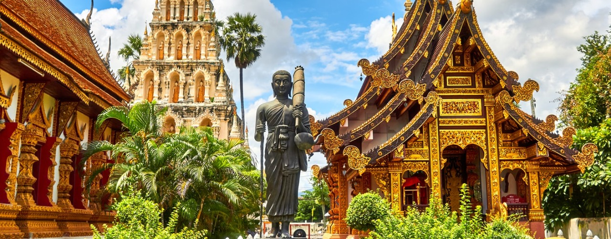

Some representative placeholder content for the first slide.

Some representative placeholder content for the second slide.
Some representative placeholder content for the first slide.
Some representative placeholder content for the second slide.


Thundering waterfalls, glaciers, the Northern Lights, and dramatic cliffs full of birdlife: Iceland has gained fame as an outdoor destination for lots of valid reasons. A wonderful introduction to the beauty this Nordic country has to offer is the Golden Circle. This popular route takes you to the stunning Gullfoss waterfalls, the lava fields of Thingvellir National Park, and the Geysir area full of bubbling mud pools, a spouting geyser, and smoke rising up from the earth. Thrillseekers will be pleased with a glacier walk on Solheimajokull or a multi-day hike through the rugged interior of Landmannalaugar. For complete solitude surrounded by breathtaking scenery, the Snaefellsnes Peninsula and the Westfjords are some of the best spots to go in Iceland.
The Dolomites are known for their characteristic pointy granite rocks. This northern Italian region is what most outdoor explorers dream about. The Dolomites attract rock climbers, mountain bikers, and hikers who come here for the challenging routes and rewarding scenery. Summer is the season for rafting and hiking. It’s recommended to choose a trail around the Three Peaks: connecting mountains that are iconic for the Dolomites. Other desirable tracks lead to some magnificent lakes, such as Lago di Carezza and Lago di Sorapiss. In the wintertime, the Dolomites turn into one of the most awe-inspiring winter sport destinations in Europe. The Dolomiti Superski area has 1200 kilometers of slopes, enough to please newbies and ski veterans alike.
This enchanting mountain range forms the natural border between Slovakia and Poland. The Tatra Mountains might not have the legendary status of the Swiss or French Alps, but this UNESCO Biosphere Reserve makes up for its lack of fame with majestic peaks and a network of mind-blowing hiking paths. The Tatra Mountains are home to incredible wildlife, and you should keep an eye open for wolves, bears, and lynx. But it’s not just about hiking in the Tatras. The winter season calls the skiing and snowboarding public to their snowy slopes. Zakopane on the Polish side is the perfect base to go out and tackle all the pistes in the area, while Jasna is the Slovakian equivalent. In other seasons, mountain biking and rock climbing make for great fun in these relatively unknown alps.
Located 11km north of Koh Phangan and about 2 hours south of Koh Tao is a landmass known as Sail Rock. Because it is the only landmass between the two islands, it supports the breeding cycle of many species, the most notable of these being Bull Sharks. Traditionally thought of as an aggressive shark, being in the water with these gracious, powerful, and beautiful animals is the ultimate adrenaline rush.The dives at this site usually consist of a lap around the rock, and although the sharks are not known to swim right up to the rock’s surface, they can be often found gliding around just a few meters away. Being firm believers in the old adage – that if you don’t bother them, they won’t bother you – we were more than comfortable being in the water with them.Add in the sheer variety of other sea-life and coral at the rock and it easily hits the top of my list of dive sites in Asia and I couldn’t recommend it highly enough.
Cambodia isn’t just a country known for ancient ruins and a brutal civil war. Adventurers will love the opportunity to get off the beaten track here and explore some of the lesser-known spots while traveling in their Southeast Asia adventures here at Cambodia. One adventure that can’t be missed is taking a trip up the Mekong River to see the famous pink dolphins, as well as all the other amazing activities to do in Stung Treng, a province in northern Cambodia.The journey starts in the city of Stung Treng where you can cycle, motorcycle or catch a long-tail boat up the Mekong, close to the Cambodia-Laos border town of Preah Rumkel. From there you can trek out even further up the river to the colossal waterfalls. As the sunsets over the Mekong River, you can see the rare pink river dolphins swimming and playing in the water. With no electricity and only nature to enjoy, it’s an early night in a hammock that overlooks the river.In the morning wake up to the sunrise and swim in the Mekong, before making your way back down the river in a long-tail boat, through the flooded forest. When the river is high these monstrous trees are submerged up to the middle of their trunks, but when the river is low all the roots are left exposed on sandy banks in the middle of the river. You can stop off along the way to explore or continue cruising down the river at a leisurely pace.
When most travelers make their way over to Malaysia, they tend to visit islands like Penang, Langkawi, or Perhentian Kecil. While I have been to all of these destinations, and really do love them — I’m always telling people that they are truly missing out if they do not visit this little paradise called Pulau Kapas.This island is the ideal place for a relaxing escape, but also for the adventurous soul. The snorkeling just a few meters off the beach is absolutely mind-blowing! You’re guaranteed to swim with turtles, hundreds of different species of fish, and even spot a few sharks if you’re lucky.There are also two different jungle hikes through the island that is well worth your time, and you can even rent your own boat to cruise around and find your own private beach.One of my favorite parts about visiting though is the beach camping on Pulau Kapas. You don’t even have to bring your own tent, as you can rent one there. The camping vibe is awesome, and you’ll definitely meet some awesome fellow travelers.” The island actually shuts down during the Monsoon season between November – February, so I always recommend visiting during June, July, and August for the best weather and snorkeling conditions. If you’ve got some spare time on your Malaysia itinerary, definitely check out Pulau Kapas!”
SEATSEEK Adventure Tours not only provides solutions for personal travels but also works on your professional travel needs. Whether it is a short trip or an office off-site that needs to be arranged. SEATSEEK provides more than 50 group tour products for Europe, almost 50 products for South East Asia, exclusive special tours for ladies, students, senior citizens, and trips to exotic destinations for newlyweds. Besides, we follow continuous research for new products, themes, and a range of travel upgrades that helps us serve the best to our guests. Whether it's a corporate tour, romantic delight, adventure junkies, we have ample tour choices to suit most of your taste, requirement, and budget.